Structured symmetry
Each plane is processed according to the exact transformation induced by a 90-degree vertical rotation.
Robotic manipulation
Efficient C4-equivariant tri-plane representations for robust 6-DoF grasp planning in clutter.
1 KU Leuven, Mechanical Engineering 2 KU Leuven, Electrical Engineering 3 Flanders Make@KU Leuven 4 HKUST(GZ)
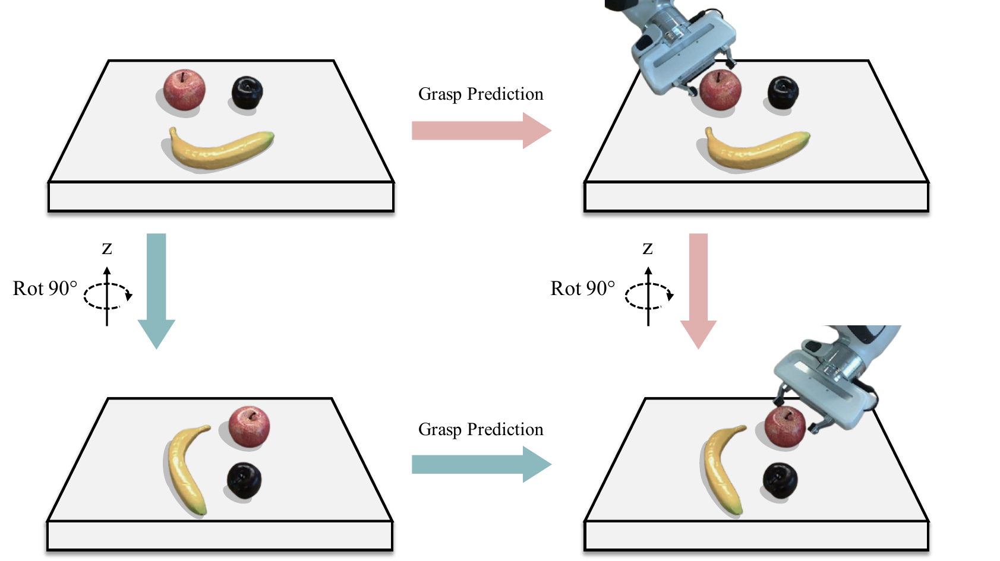
Why equivariance
A grasp planner should transform predictably when the scene rotates. We encode that property in the architecture, rather than asking training data to cover every object orientation.
Full 3D rotation equivariance is costly for real-time volumetric planning. We target the rotation that dominates tabletop manipulation: 90-degree rotations around the vertical axis. This preserves the useful symmetry while keeping computation tractable.
Our representation projects 3D features onto three canonical planes. Under a C4 rotation, the table plane rotates in-plane, while the two vertical planes undergo a structured combination of permutation and reflection. The model is explicitly designed to respect this induced action.
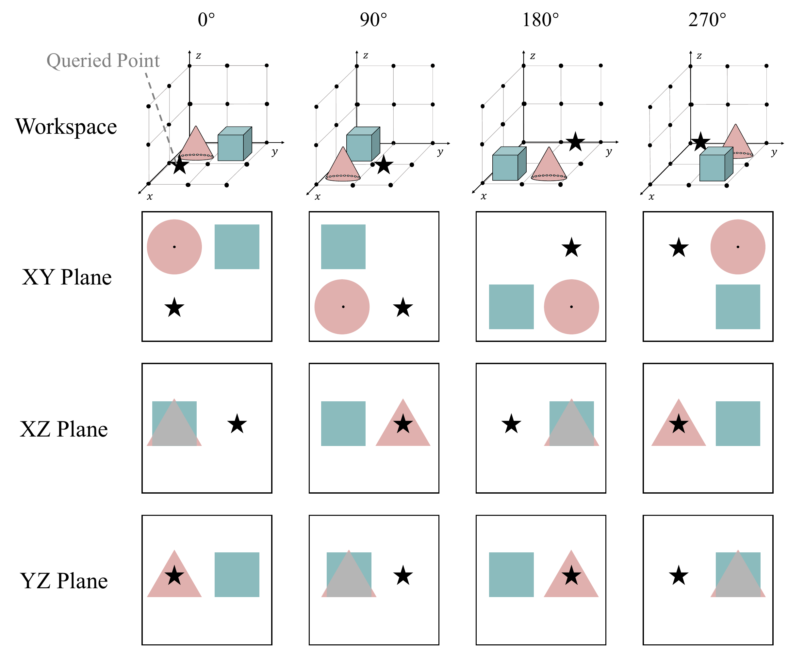
Method
A single 3D steerable lifting layer creates volumetric primitive features. We then project them to three planes and use lightweight 2D equivariant processing to build a unified, queryable 3D feature field.
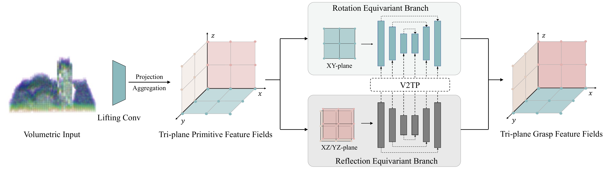
Each plane is processed according to the exact transformation induced by a 90-degree vertical rotation.
Tri-plane processing replaces expensive stacks of 3D steerable convolutions with three 2D branches.
The representation supports both direct regression and generative grasp-orientation sampling.
Equivariant planners
We instantiate the feature field in GIGA and IGD, yielding EquiGIGA and EquiIGD. The two systems preserve equivariance through either grasp-orientation regression or generative orientation sampling.
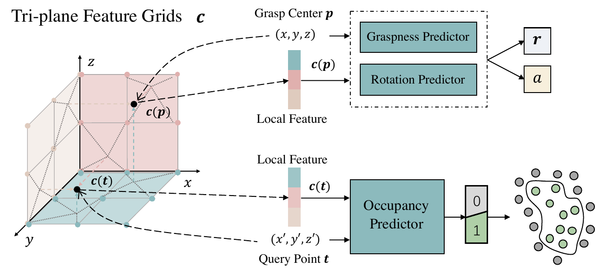
Equivariant heads predict graspness, occupancy, and grasp orientation directly at queried positions.
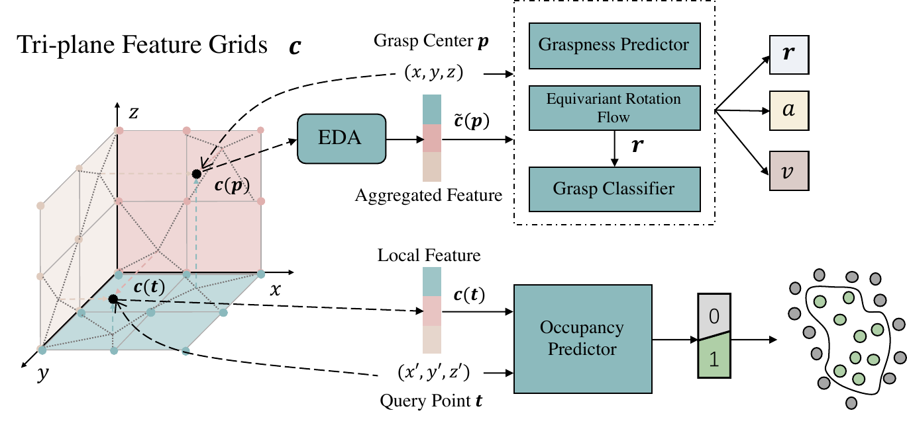
Equivariant deformable attention and rotation flow model multi-modal grasp orientations, then score candidate grasps.
Evidence
Across reduced-data experiments, the equivariant models consistently outperform their non-equivariant counterparts. In fixed-view simulated clutter removal, both planners also improve substantially over GIGA and IGD.
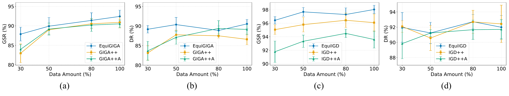
| Method | Packed GSR | Packed DR | Pile GSR | Pile DR | Latency |
|---|---|---|---|---|---|
| GIGA | 84.8 ± 2.2 | 85.1 ± 2.5 | 69.5 ± 1.3 | 49.0 ± 3.4 | 24 ms |
| IGD (N=1) | 92.9 ± 1.8 | 86.7 ± 1.8 | 68.2 ± 1.9 | 50.6 ± 1.5 | 217 ms |
| EquiGIGA | 94.5 ± 1.3 | 91.4 ± 1.2 | 79.1 ± 2.2 | 77.3 ± 3.9 | 25 ms |
| EquiIGD (N=1) | 98.0 ± 0.6 | 92.0 ± 1.5 | 79.5 ± 1.3 | 77.0 ± 1.1 | 52 ms |
GSR: grasp success rate. DR: declutter rate. Results are mean ± standard deviation in the fixed-view simulation benchmark.
Equivariance analysis
The following analyses show how the proposed architecture preserves grasp prediction behavior under rotation, learns orientation more efficiently, and transfers more reliably across camera viewpoints.
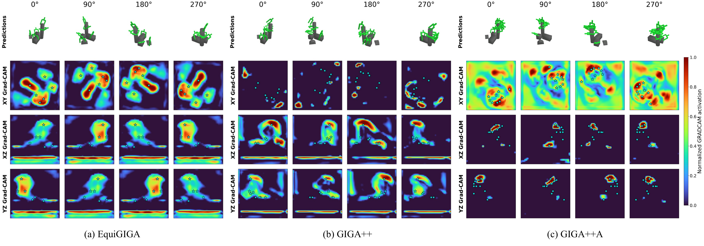
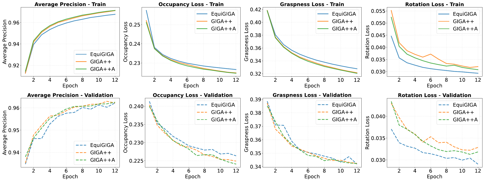
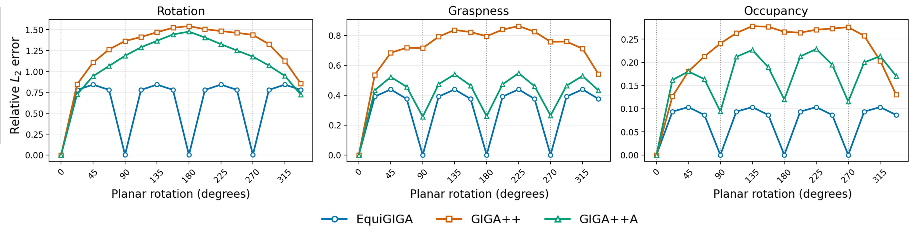
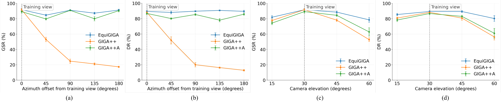
Real-world decluttering
We evaluate 15 rounds of five objects per scene using a RealSense D435 camera. The equivariant planners deliver the strongest real-world performance across all three scenarios.
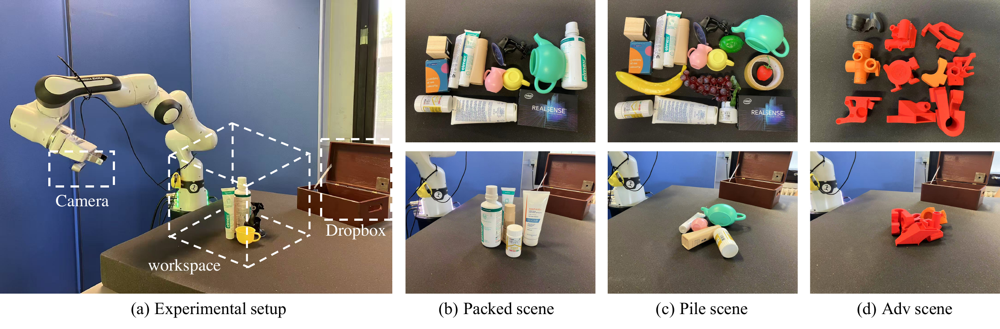
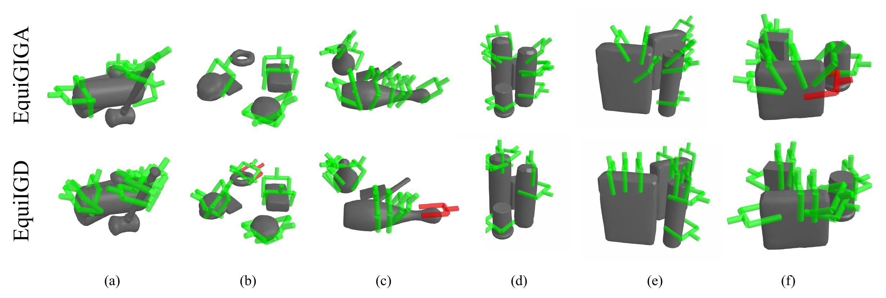
Citation
@article{song2025equivariant,
title={Equivariant Volumetric Grasping},
author={Song, Pinhao and Hu, Yutong and Li, Pengteng and Detry, Renaud},
journal={arXiv preprint arXiv:2507.18847},
year={2025}
}